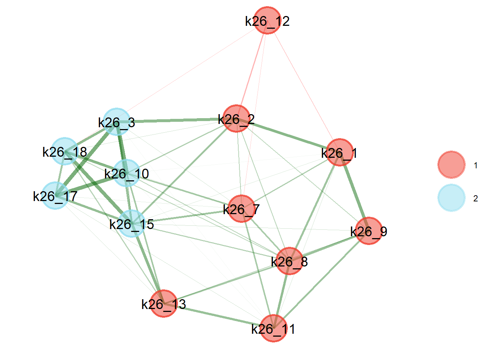
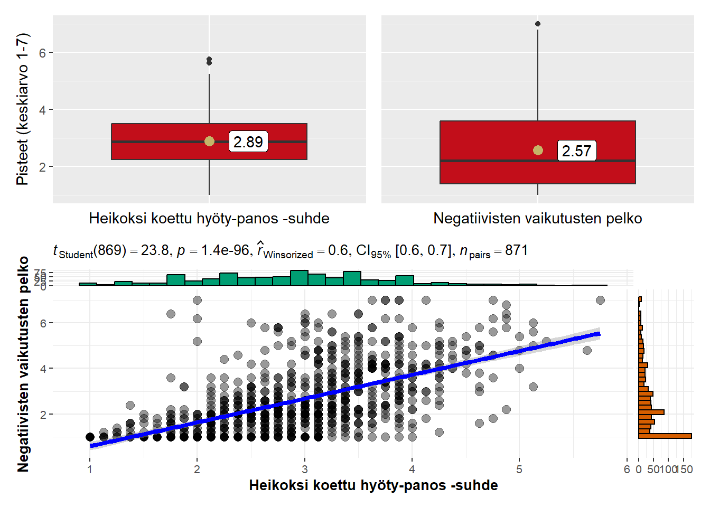

Osiossa käytetyt paketit
library(EGAnet) # EGA-mallien asettaminen
library(patchwork) # Kuvioiden asettelu
library(ggstatsplot) # Tilastokuvioiden piirtäminen
library(tidyverse) # Yleinen datakäsittelyTässä osiossa analysoimme ilmoitusjärjestelmiin kohdistuvien asennemuuttujien faktorirakennetta verkostoanalyysin ja konfirmatorisen faktorianalyysin avulla
library(EGAnet) # EGA-mallien asettaminen
library(patchwork) # Kuvioiden asettelu
library(ggstatsplot) # Tilastokuvioiden piirtäminen
library(tidyverse) # Yleinen datakäsittelydata <- read.csv2("output/valmisdata.csv", tryLogical = FALSE)Päätimme jättää pois neljä muuttujaa patteristosta:
k26_4: Jos henkilöllä on alentunut toimintakyky, häntä ei voi syyttää toiminnastaank26_6: Konfliktitilanteet ovat osa työtänik26_14: Tilanteet ovat yksittäistapauksiak26_5: Ilmoitan kaikki kohtaamani tilanteetEnsimmäiset kolme muuttujaa ovat yleisiä asenteita epäasiallisia ja väkivaltaisia kohtaamisia kohtaan. Viimeinen muuttuja liittyy ilmoitusjärjestelmiin, mutta kuvailee ennemmin vastaajan toimintaa eikä asenteita.
Otimme mukaan neljätoista muuttujaa analyysiin:
k26_1: Prosessit ovat liian raskaita tai työläitäk26_2: Prosessit eivät johda toimenpiteisiink26_3: Pelkään esihenkilön vastatoimiak26_7: Minulla ei ole tilaisuutta tai mahdollisuutta ilmoittaak26_8: Epäselvää, milloin minun tulisi ilmoittaak26_9: Unohdan ilmoittaak26_10: Pelkään ammattitaitoni kyseenalaistamistak26_11: Ajattelin, että joku muu hoitaa ilmoituksenk26_12: Valtakunnallisesta ilmoitusprosessista olisi hyötyäk26_13: En halua pahaa tekijällek26_15: Pelkään, että tekijä saa tietää ilmoituksestak26_16: Kollegani näkisi minut ongelmallisena tai vaikeanak26_17: Pelkään menettäväni työpaikkanik26_18: Pelkään kollegoiden vastatoimiaMuuttuja k26_12 käännettiin ennen analyysia, sillä se on ainoa positiivisesti muotoiltu väite. Täten mahdolliset faktorit edustavat negatiivisia mielipiteitä.
# Tallennetaan muuttujien nimet helpottaakseen analyysia
muuttujat <- c(
"k26_1", "k26_2", "k26_3", "k26_7", "k26_8",
"k26_9", "k26_10", "k26_11", "k26_12", "k26_13",
"k26_15", "k26_16", "k26_17", "k26_18"
)
# Käännetään muuttuja k26_12
data <- data |>
mutate(
across(
k26_12,
~ case_match(
.x,
1 ~ 7,
2 ~ 6,
3 ~ 5,
4 ~ 4,
5 ~ 3,
6 ~ 2,
7 ~ 1,
NA ~ NA
)
)
)Teimme eksploratiivisen verkostoanalyysin (engl. exploratory graph analysis, EGA) ymmärtääksemme muuttujien välisiä suhteita paremmin.
ega.uva <- UVA(
data = data |> select(all_of(muuttujat))
)
print(ega.uva)Variable pairs with wTO > 0.30 (large-to-very large redundancy)
----
Variable pairs with wTO > 0.25 (moderate-to-large redundancy)
node_i node_j wto
k26_16 k26_18 0.262
----
Variable pairs with wTO > 0.20 (small-to-moderate redundancy)
node_i node_j wto
k26_3 k26_17 0.227Uniikin varianssin analyysi tunnistaa yhden muuttujaparin, joiden varianssit verkostomallissa ovat liian päällekkäisiä: k26_16 (“Kollegani näkisivät minut ongelmallisena tai vaikeana jos tekisin ilmoituksen”) ja k26_18 (“Pelkään kollegoideni ryhtyvän vastatoimiin, jos tekisin ilmoituksen”).
Malli ehdottaa poistettavaksi muuttujaa k26_18.
ega.malli <- EGA(
data = ega.uva$reduced_data,
uni.method = "LE",
corr = "pearson",
na.data = "pairwise",
model = "glasso",
algorithm = "walktrap"
)
print(ega.malli)Model: GLASSO (EBIC with gamma = 0.5)
Correlations: pearson
Lambda: 0.0718679716146387 (n = 100, ratio = 0.1)
Number of nodes: 13
Number of edges: 52
Edge density: 0.667
Non-zero edge weights:
M SD Min Max
0.089 0.081 -0.069 0.268
----
Algorithm: Walktrap
Number of communities: 2
k26_1 k26_2 k26_3 k26_7 k26_8 k26_9 k26_10 k26_11 k26_12 k26_13 k26_15
1 1 2 1 1 1 2 1 1 1 2
k26_17 k26_18
2 2
----
Unidimensional Method: Leading Eigenvector
Unidimensional: No
----
TEFI: -6.681
Kuva 30.1 osoittaa EGA-mallin estimoinnin rakenteen. Malli ehdottaa kahta muuttujaryhmää, A ja B.
Ryhmä A:
k26_1 Liian raskaatk26_2 Ei johda toimenpiteisiink26_7 Ei tilaisuuttak26_8 Epäselvääk26_9 Unohdank26_11 Joku muu hoitaak26_12 Valtakunnallinen prosessi (käännetty)Ryhmä B:
k26_3 Pelkään esihenkilön vastatoimiak26_10 Ammattitaidon kyseenalaistaminenk26_13 En halua pahaak26_15 Tekijä saa tietääk26_17 Pelkään työpaikan menettämistäk26_18 Pelkään kollegoiden vastatoimiaega.boot <- bootEGA(
data = ega.uva$reduced_data,
iter = 1000,
type = "resampling",
uni.method = "LE",
corr = "pearson",
na.data = "pairwise",
model = "glasso",
algorithm = "walktrap",
seed = 1234 # Mahdollistaa toistettavuuden
)
print(ega.boot)Model: GLASSO (EBIC)
Correlations: pearson
Algorithm: Walktrap
Unidimensional Method: Leading Eigenvector
----
EGA Type: EGA
Bootstrap Samples: 1000 (Resampling)
2 3 4 5
Frequency: 0.745 0.201 0.053 0.001
Median dimensions: 2 [0.88, 3.12] 95% CI
Stabiliteettiarvot yli noin 0.75 ovat luotettavia. Analyysi osoittaa, että muuttuja k26_13 (Tekijä saa tietää) ei ole vakaa bootstrap-analyysissa, ja voi vaihdella otosten välillä. Muuttujat k26_7 (Ei tilaisuutta) ja k26_2 (Ei johda toimenpiteisiin) ovat vakauden rajalla. Muut muuttujat täyttävät vakauden raja-arvon.
Ulottuvuuksien mediaani oli 2, mutta 95 prosentin luottamusväli oli laaja ja sisälsi myös yhden ja kolmen (95 % CI 0,98-3,02). Tuhannen bootstrap-ajon mallissa kahden ulottuvuuden malli esiintyi 76,9 prosenttia kerroista, kolmen ulottuvuuden malli 19,4 prosenttia kerroista ja neljän ulottuvuuden malli 3,7 prosenttia kerroista.
data <- data |>
mutate(
ilmo1_sum = k26_1 + k26_2 + k26_7 + k26_8 + k26_9 + k26_11 + k26_12,
ilmo2_sum = k26_3 + k26_10 + k26_13 + k26_15 + k26_17 + k26_18,
ilmo1 = ilmo1_sum/7,
ilmo2 = ilmo2_sum/6
)ilmo1ka <- mean(data$ilmo1, na.rm = TRUE)
ilmo2ka <- mean(data$ilmo2, na.rm = TRUE)
ilmo1_fig <- data |>
select(ilmo1) |>
ggplot(aes(x = ilmo1, y = "")) +
geom_boxplot(fill = "#C20E1A") +
geom_point(aes(y = "", x = ilmo1ka), colour = "#C5B568",
size = 3, show.legend = FALSE) +
geom_label(aes(y = "", x = ilmo1ka), label = round(ilmo1ka, 2),
hjust = -0.5, fill = "white") +
coord_flip() +
scale_x_continuous(
limits = c(1, 7)
) +
labs(
x = "Pisteet (keskiarvo 1-7)",
y = "Heikoksi koettu hyöty-panos -suhde"
) +
theme(
axis.text.x = element_blank(),
axis.ticks.x = element_blank()
)
ilmo2_fig <- data |>
select(ilmo2) |>
ggplot(aes(x = ilmo2, y = "")) +
geom_boxplot(fill = "#C20E1A") +
geom_point(aes(y = "", x = ilmo2ka), colour = "#C5B568",
size = 3, show.legend = FALSE) +
geom_label(aes(y = "", x = ilmo2ka), label = round(ilmo2ka, 2),
hjust = -0.5, fill = "white") +
coord_flip() +
scale_x_continuous(
limits = c(1, 7)
) +
labs(
x = "Pisteet (keskiarvo 1-7)",
y = "Negatiivisten vaikutusten pelko"
) +
theme(
axis.text.x = element_blank(),
axis.ticks.x = element_blank()
)
ilmo_korr <- data |>
ggscatterstats(
x = "ilmo1",
y = "ilmo2",
type = "robust",
bf.message = FALSE,
digits = 1,
xlab = "Heikoksi koettu hyöty-panos -suhde",
ylab = "Negatiivisten vaikutusten pelko"
)
(ilmo1_fig + ilmo2_fig + plot_layout(axes = "collect_y")) / ilmo_korr